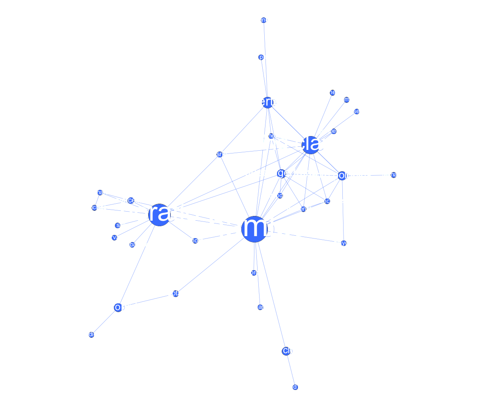
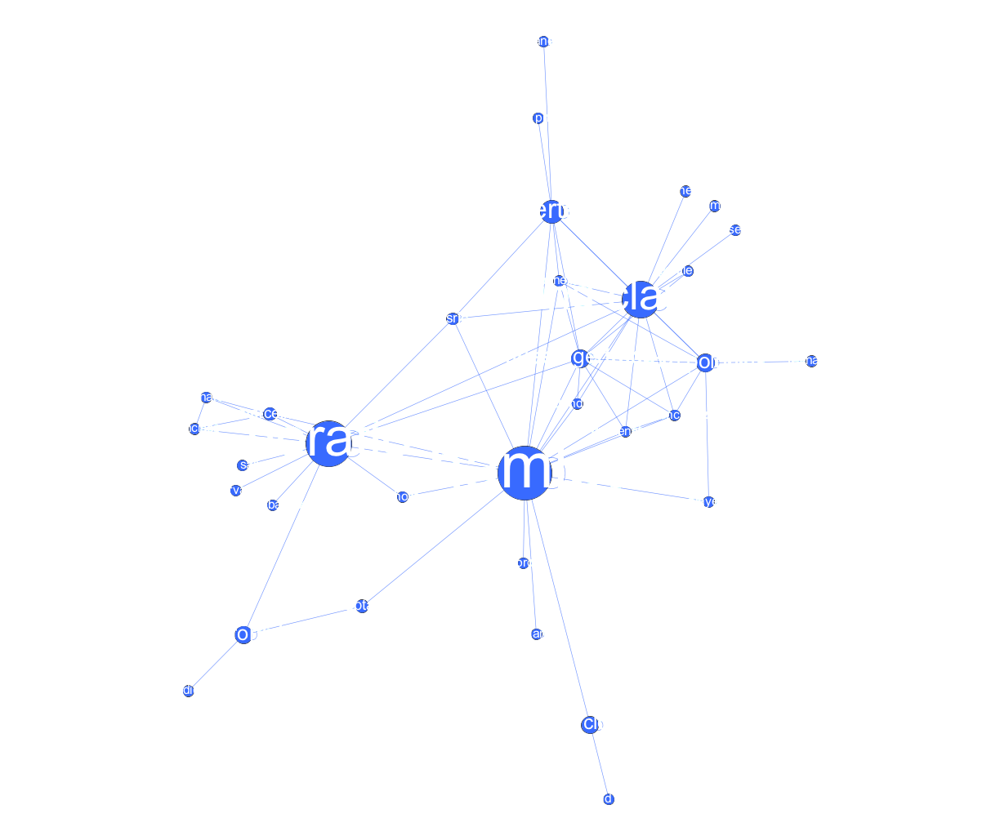

rus.dracor.org
Корпус русской драмы
Даниил Скоринкин
dskorinkin@hse.ru

TL;DR
Теперь подробнее
Мотивация: сетевой анализ литературы
Сеть (граф)

Может служить моделью для многого

Может служить моделью для многого

Может служить моделью для многого

Сети и литература
Donald Knuth. Stanford GraphBase (1994)

Сетевой анализ литературы
Schweizer T., Schnegg M. Die soziale Struktur der. „Simple Storys“: Eine Netzwerkanalyse. 1998

Социальные сети у Шекспира
Stiller J., Nettle D., Dunbar R.I.M. The small world of Shakespeare’s plays. // Human nature. 2003. 14/4. С. 397–408.

Социальные сети у Шекспира
Stiller J., Nettle D., Dunbar R.I.M. The small world of Shakespeare’s plays. // Human nature. 2003. 14/4. С. 397–408.
Сравнение сетей 60 британских романов
- Elson, D. K., Dames, N. and McKeown, K. (2010), Extracting Social Networks from Literary Fiction, Proceedings of ACL 2010, Uppsala, Sweden.


Анализ сети Гамлета от Франко Моретти

Франко Моретти, «Теория сетей и анализ сюжета» (2011)
Моретти о раскрытии роли Горацио через сети
Though Horatio is an old fixation of mine, I had never fully understood his role in Hamlet until I looked at the play’s network structure.
Franco Moretti. “Distant Reading”

Переведем в цифры
| Персонаж | Степень | Промежуточность (betweenness) |
|---|---|---|
| Гамлет | 19 | 219,4 |
| Король (Клавдий) | 16 | 131,6 |
| Горацио | 14 | 176,7 |
Визуализируем:
 

Для русских пьес — RusDraCor

rus.dracor.org
(Shiny RusDraCor)

Сети из драмы легче извлекать
“Networks are made of vertices and edges; plot networks, of characters and verbal exchanges. In plays this works well, because words are deeds, deeds are almost always words, and so, basically, a network of speech acts is a network of actions”.
Franco Moretti. “Distant Reading”
АКТ I
СЦЕНА 1
Эльсинор. Площадка перед замком. Франсиско на страже. Входит Бернардо,
Бернардо
Кто здесь?
Франсиско
Нет, сам ответь мне; стой и объявись.
<head>АКТ I</head>
<div type="scene"><head>СЦЕНА 1</head>
<stage>Эльсинор. Площадка перед замком. Франсиско на страже. Входит Бернардо,</stage>
<speaker>Бернардо</speaker>
Кто здесь?
<speaker>Франсиско</speaker>
Нет, сам ответь мне; стой и объявись.
тут и глазами можно что-то ухватывать

тут и глазами можно что-то ухватывать

Гете и Шекспир


RusDraCor: Борис Годунов

Классицизм против "шекспировской пьесы"


Важный ли герой Гаврила Пушкин?

Пушкин на посылках и betweenness centrality

Битяговский (двойной агент)

Битков (соглядатай/двойник Пушкина)

Жанры пьес — и плотности сетей


Плотность = 0.5 (3/6) Плотность = 1 (6/6)
Плотности комедии и трагедии отличаются

Плотности комедий и не-комедий в RusDraCor

Осторожно, предварительные данные!
P.S. Кроме сетей
Сценические ремарки разных эпох
<stage>Слуги уходят.</stage>
<stage>(Подходит к столу; ему дают место.)</stage>
<stage>Грохот, взрыв, выстрел. Победоносиков распахивает дверь и бросается в квартиру. На нижней площадке фейерверочный огонь. На месте поставленного аппарата светящаяся женщина со свитком в светящихся буквах. Горит слово "Мандат". Общее остолбенение. Выскакивает Оптимистенко, на ходу подтягивает брюки, в ночных туфлях на босы ноги, вооружен. </stage>
Эпический театр

Общая длина ремарок

Ремарки/речь

Использование глаголов в ремарках

Части речи в ремарках

(исследование Даши Максимовой)
Перспективы: язык персонажей, гендерные особенности героев...
<person xml:id="ZhenaLukiLukicha" sex="FEMALE">
<persName>Жена Луки Лукича</persName>
</person>
<person xml:id="Derzhimorda" sex="MALE">
<persName>Держиморда</persName>
</person>
<person xml:id="Hlestakov" sex="MALE">
<persName>Хлестаков</persName>
</person>
<person xml:id="UnterOfitsersha" sex="FEMALE">
<persName>Унтер-офицерша</persName>
</person>
<person xml:id="Korobkin" sex="MALE">
<persName>Коробкин</persName>
</person>
Доля речи мужчин и женщин
Характерные для мужской и женской речи слова

Команда